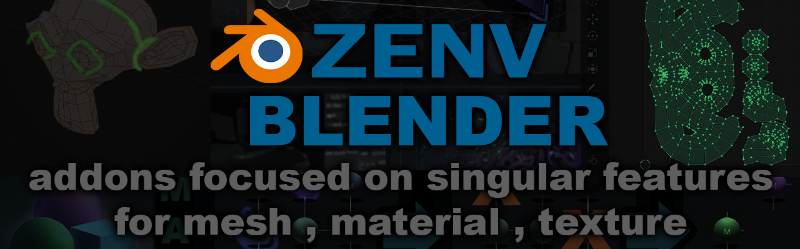
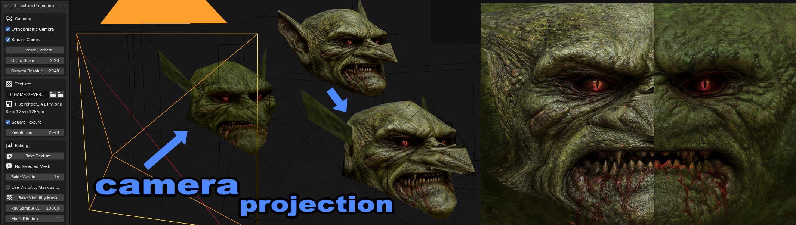

Texture

TEX Camera Projection
Create camera from current view and bake projected textures

TEX Bake Transition Worldspace
bake worldspace transition texture between two meshes
| TEX Texture Variant View | Quickly view and organize texture variants on a model |
| TEX Bake Ambient Occlusion | bake AO to texture , selected temp merge |
| TEX Bake Curvature Edge Highlight | bake Curvature to texture , selected temp merge |
| TEX Bake UV Island Facing-Center Mask | per UV island pick 1 face facing a center point; bake mask via EMIT |
| TEX Bake Worldspace Bounds Gradients | multi-object worldspace gradients bake (XYZ RGB or vertical grayscale) |
| TEX Texture Export Dated | Export painted textures to dated copies inside the matching project folder |
Mesh
| MESH Separate By Material | for each material detach mesh into parts |
| MESH Separate by UV Islands | for each uv island detach mesh into parts |
| MESH Separate by UV Quadrants | split mesh along UV seams and transform |
| MESH Separate by Axis | separate mesh parts by axis |
| MESH Rename Objects By Material | rename objects by material name |
| MESH Noise Surface Displacement | 3D noise-based surface displacement with presets |
| MESH Cut World Bricker | Cut mesh into brick like segments |
| MESH to UV Space | transform mesh to match UV layout in 3D space |
Generative

GEN Planet Procedural
Generate procedural planets with layered terrain.

GEN VFX Slash
generate a parabola mesh for vfx slash effects
| GEN random Tiles by Textures | generate random tiles from texture set for tiling and seam blending review |
| GEN Ultima Landtiles from CSV | generate ultima land tile planes from a CSV map file |
Material
| MAT Consolidate Materials by Texture | reduce to one material per texture |
| MAT Rename Material by Texture | rename material by texture name |
| MAT Rename Material Suffix | add or remove prefix or suffix on materials |
| MAT Remove Opacity | remove all opacity textures in materials |
| MAT Create From Textures | create materials from texture folder |
| MAT Unlit Convert | convert all materials to emission for unlit render |
| MAT Remap Textures | remap texture paths in materials |
| MAT Set Textures by Material Name | assign textures based on material names |
Export
| EXPORT All Objects to Separate Blend Files | batch export selected objects to separate blend files |
| EXPORT All Objects to FBX Files for UE4 | batch export selected objects to separate FBX files |
View
| VIEW Flat Texture View | quickview flat color texture , unlit viewmode |
| VIEW Scale Clipping | uses bounds of objects in scene to set near and far clipping |
UV
| UV Mirror Zero Pivot | U or V mirroring with pivot always at zero instead of the default of selected center |
| UV Optimize Islands | Snap UV islands toward origin |
Render
| RENDER Unlit Color | quick renders color unlit image with datetime suffix |
| RENDER Depth Map | renders depth with auto min max from selected object with datetime suffix |
Clean
| CLEAN Scene Optimizer | optimize removing unused material , textures , and mesh data |
Texture
| TEX Camera Projection | Create camera from current view and bake projected textures |
| TEX Bake Transition Worldspace | bake worldspace transition texture between two meshes |
| TEX Texture Variant View | Quickly view and organize texture variants on a model |
| TEX Bake Ambient Occlusion | bake AO to texture , selected temp merge |
| TEX Bake Curvature Edge Highlight | bake Curvature to texture , selected temp merge |
| TEX Bake UV Island Facing-Center Mask | per UV island pick 1 face facing a center point; bake mask via EMIT |
| TEX Bake Worldspace Bounds Gradients | multi-object worldspace gradients bake (XYZ RGB or vertical grayscale) |
| TEX Texture Export Dated | Export painted textures to dated copies inside the matching project folder |
Mesh
| MESH Angular Planarize | planarize mesh faces by random k-means angle cluster , useful for rock like sharpening with flat areas |
| MESH Separate By Material | for each material detach mesh into parts |
| MESH Separate by UV Islands | for each uv island detach mesh into parts |
| MESH Separate by UV Quadrants | split mesh along UV seams and transform |
| MESH Separate by Axis | separate mesh parts by axis |
| MESH Rename Objects By Material | rename objects by material name |
| MESH Noise Surface Displacement | 3D noise-based surface displacement with presets |
| MESH Cut World Bricker | Cut mesh into brick like segments |
| MESH to UV Space | transform mesh to match UV layout in 3D space |
Generative
| GEN Planet Procedural | Generate procedural planets with layered terrain. |
| GEN VFX Slash | generate a parabola mesh for vfx slash effects |
| GEN random Tiles by Textures | generate random tiles from texture set for tiling and seam blending review |
| GEN Ultima Landtiles from CSV | generate ultima land tile planes from a CSV map file |
Material
| MAT Remove Unused Materials |  remove unused materials |
| MAT Consolidate Materials by Texture | reduce to one material per texture |
| MAT Rename Material by Texture | rename material by texture name |
| MAT Rename Material Suffix | add or remove prefix or suffix on materials |
| MAT Remove Opacity | remove all opacity textures in materials |
| MAT Create From Textures | create materials from texture folder |
| MAT Unlit Convert | convert all materials to emission for unlit render |
| MAT Remap Textures | remap texture paths in materials |
| MAT Set Textures by Material Name | assign textures based on material names |
Export
| EXPORT All Objects to Separate Blend Files | batch export selected objects to separate blend files |
| EXPORT All Objects to FBX Files for UE4 | batch export selected objects to separate FBX files |
Curve
| CURVE Helix Along Curve |  Generate helical curves that follow a base curve |
Items
| ITEM Potion Generator |  generate procedural potion bottles with modular components |
View
| VIEW Flat Texture View | quickview flat color texture , unlit viewmode |
| VIEW Scale Clipping | uses bounds of objects in scene to set near and far clipping |
UV
| UV Mirror Zero Pivot | U or V mirroring with pivot always at zero instead of the default of selected center |
| UV Optimize Islands | Snap UV islands toward origin |
Render
| RENDER Unlit Color | quick renders color unlit image with datetime suffix |
| RENDER Depth Map | renders depth with auto min max from selected object with datetime suffix |
Clean
| CLEAN Scene Optimizer | optimize removing unused material , textures , and mesh data |